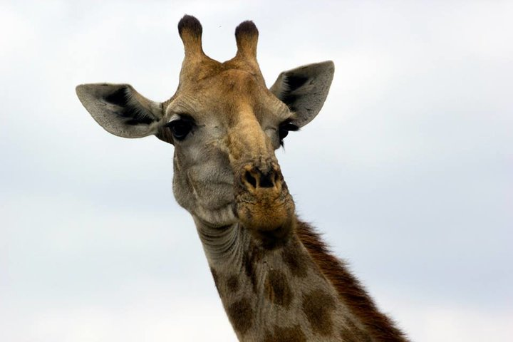
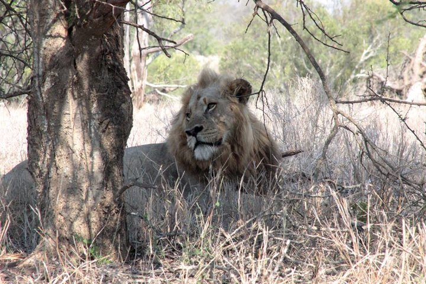
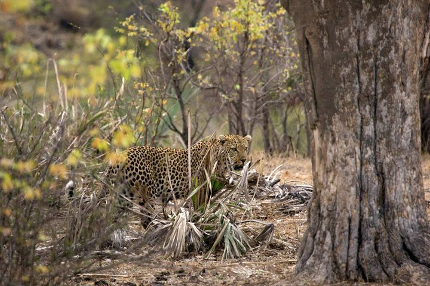
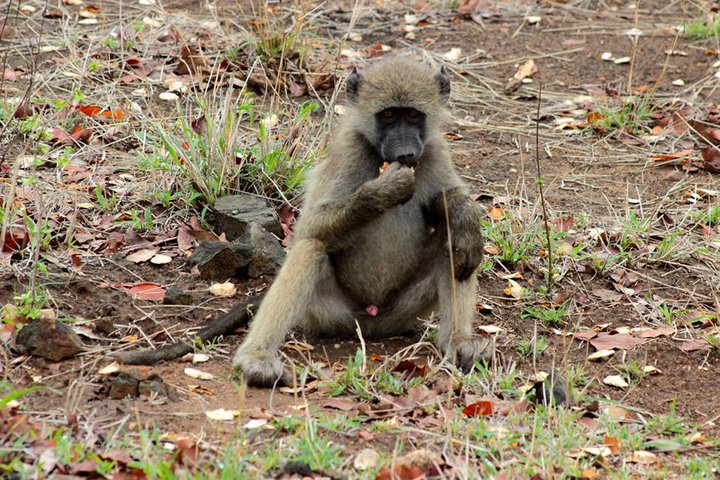
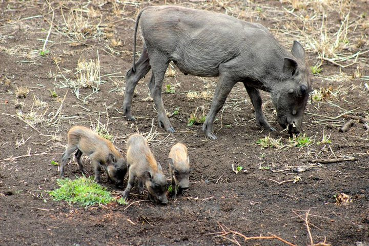

South African Animals
-

-

Giraffe
The giraffe is the tallest animal in the world, reaching an average height of 18 feet They can reach speeds.
of 35mph over short distances. Males can weigh up to 1200 kg and females can reach 800 kg. A giraffe's
tongue is 21 inches long, which helps them leaves from tree branches. -

Elephant
The Elephant is the world's largest land mammal, and weighs up to 7 tons and reaches heights of 14 feet
at the shoulder. Elephants can live to about 70 years old. The massive tusks of older bulls can
weigh up to 140 lbs. Elephants are currently endangered after years of being poached for ivory. -

Lion
The power of a lion is reflected in their impressive size and the fact that their lifestyles
allow them to sleep up to 18 hours a day. Mature males can weigh 500 lbs and females up to
350 lbs. Their average lifespan in the wild is probably around 15 years. Lions are the
and most social, of the African cats, living communally in prides. -

Cheetah
The Cheetah's body is built for speed. It's legs are relatively long compared to its greyhound-like body.
It it has a big heart and lungs and wide nasal passages, which helps make it the fastest
land animal, timed running at speeds of up to 70mph. -

Cape Baboon
The Cape Baboon is a large primate with a dog-like face and large, prominent canines. They have a very high degree
of social intelligence, thought to be attributed to the about of seafood they consume. A mature male can measure
5 feet from head to tail and weighs up to 75 kg, whereas females weigh only around 15 kg. -

Warthog
Warthogs spend their days looking for food. They are normally found in family groups. Warthogs have a strange habit of
kneeling on the front knees while feeding and tend to stick to a localised area.They shelter in burrows at night, which
they enter tail first. They are found in three main social groups: solitary boars, bachelor and matriarchal groups.